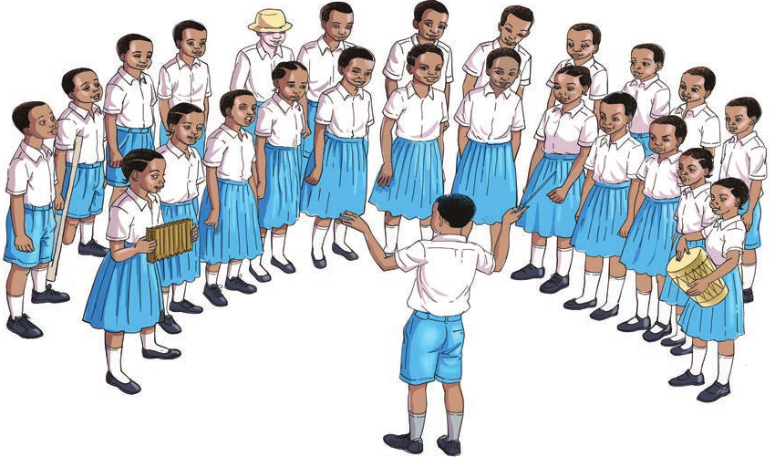

Tuimbe nyimbo
Mhusika mdogo amesimama karibu na kiputo kinachowaalika wanafunzi kuimba nyimbo.
Wanafunzi wengi wamesimama katika nusu duara wakiimba; watatu wanapiga ala, na mwanafunzi aliye mbele anawaongoza.Nyimbo zetu
- Rasilimali zetu1. Rasilimali zetu
- Tanzania nakupenda2. Tanzania nakupenda
- Mbuga za wanyama Tanzania3. Mbuga za wanyama Tanzania
- Wimbo wa Taifa Tanzania4. Wimbo wa Taifa Tanzania
47